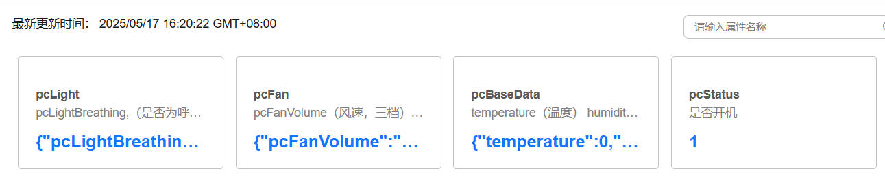
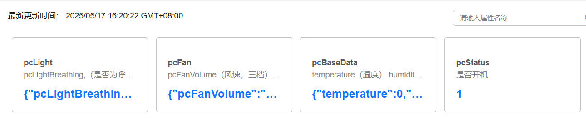

esp32c2端对接文档
烧录说明
- 前往下载 Flash Download Tool 烧录工具，选择
ESP32-C2，按照图中的SPIFlashConfig进行配置（注意SPI SPEED是26.7MHz），随后将合并好的.bin文件进行在地址0x00直接进行烧录即可。稍等片刻，芯片会等待配网，此时如果看到芯片的热点名称，即视为烧录成功且程序成功运行


WIFI：
- （已弃用）进行wifi连接，暂时使用本地wifi测试（小程序配网后续完善），
// Wi-Fi SSID // Wi-Fi 密码- （需要官方app的softap配网工具）进行配网
xxxxxxxxxx const char *service_name = "SMARTHOST_PROV"; const char *service_key = "abcd1234"; // SoftAP 密码 const char *pop = "abcd1234"; // Proof of possession前往下载 softap 官方配网工具app，官方同时提供
ios,Android的版本，可根据开源仓库代码进行复刻该工具的使用流程就是
Provision New Device->i don't have a QR code->Connect->连接芯片热点->选择对应wifi填入信息->等待配网响应成功即可。需要注意的是，第一次配网成功之后，之后esp将会自动连接配置好的wifi而无需再次配网（后续可进行设置，比如用户希望更换网络）
SOFTAP：
前往开源配网软件源代码 SoftAPTransport.java，中，HTTP 请求的核心流程体现在如下方法里：
sendPostRequest(String path, byte[] data, ResponseListener listener)负责构造并发送 HTTP POST 请求到指定 path（如prov-session,prov-scan等），并处理服务器（ESP 设备）响应。sendConfigData(String path, byte[] data, ResponseListener listener)对外暴露接口，实际通过线程池异步调用sendPostRequest完成配网通信。看到 java 代码片段如下（省略部分内容）：
xxxxxxxxxxURL url = new URL("http://" + baseUrl + "/" + path);HttpURLConnection urlConnection = (HttpURLConnection) url.openConnection();urlConnection.setRequestMethod("POST");urlConnection.setRequestProperty("Accept", "text/plain");urlConnection.setRequestProperty("Content-type", "application/x-www-form-urlencoded");...OutputStream os = urlConnection.getOutputStream();os.write(data);os.close();其中 baseUrl 会配置为设备的 mDNS 地址，比如 wifi-prov.local。而esp默认的官方地址为192.168.4.1，这一点在esp的调试终端中可以看到
xxxxxxxxxx2025-06-04 20:22:23 I (1288) esp_netif_lwip: DHCP server started on interface WIFI_AP_DEF with IP: 192.168.4.1- 当设备连接上之后，设备端分配到IP地址。此时就可以进行http的访问请求了
xxxxxxxxxx2025-06-04 21:11:57 I (2974568) wifi:station: 8c:c6:81:9a:bb:18 join, AID=1, bgn, 202025-06-04 21:11:57 I (2974848) esp_netif_lwip: DHCP server assigned IP to a client, IP is: 192.168.4.2- 而ESP 侧的 protocomm 实现要求所有 POST 请求必须有
Content-Length字段（哪怕 body 为空）。
xxxxxxxxxxcurl -v -X POST -H "Content-Type: application/json" -d '' http://192.168.4.1/proto-ver- 连接后，客户端应用程序可以立即从
proto-ver端点获取版本或功能信息。所有与此端点的通信均未加密，因此在建立安全会话之前，可以检索相关必要信息，确保会话兼容。响应数据采用 JSON 格式，示例如下：prov: { ver: v1.1, sec_ver: 1, sec_patch_ver: 0, cap: [no_pop] }, my_app: { ver: 1.345, cap: [cloud, local_ctrl] },....。此时在终端进行访问成功之后，终端信息如下所示，拿到了prov的json文本标签即视为成功。
xNote: Unnecessary use of -X or --request, POST is already inferred.* Trying 192.168.4.1:80...* Connected to 192.168.4.1 (192.168.4.1) port 80* using HTTP/1.x> POST /proto-ver HTTP/1.1> Host: 192.168.4.1> User-Agent: curl/8.12.1> Accept: */*> Content-Type: application/json> Content-Length: 2>* upload completely sent off: 2 bytes< HTTP/1.1 200 OK< Content-Type: text/html< Content-Length: 73< Set-Cookie: session=2252508986<{ "prov": { "ver": "v1.1", "sec_ver": 1, "cap": ["wifi_scan"] }}* Connection #0 to host 192.168.4.1 left intact
- 随后对该数据包进行解析即可，连接到 ESP 设备的热点，确保已经连接上 ESP 设备开启的 Wi-Fi 热点（SoftAP）。访问以下 HTTP 端点，具体的客户端实现步骤请跳转到 ##MINIPROGRAM
获取版本信息： http://192.168.4.1/proto-ver 建立会话： http://192.168.4.1/prov-session 启动 Wi-Fi 扫描： http://192.168.4.1/prov-scan 配置 Wi-Fi 凭据： http://192.168.4.1/prov-config
MQTT：
- IOT端的属性列表，命令列表
- 以下三元组等信息仅供参考（本人用的自己的账户进行测试）
xxxxxxxxxx //e5e7404266.st1.iotda-device.cn-north-4.myhuaweicloud.com:1883" 
 

xxxxxxxxxx //数据格式参考 pcLight:{"pcLightBreathing":false,"pcLightFleeting":false,"pcLightColor":"white"} pcFan:{"pcFanVolume":"high","pcFanIn":true,"pcFanOut":true} pcBaseData:{"temperature":0,"humidity":0} pcStatus:1BLE：
- 广播之后，等待连接（不影响MQTT线程），连接之后，此时语音芯片一旦作答，在MQTT上报的同时，也会向小程序发送类似
0xA5 0xFA 0x00 0x81 0xC7 0x07 0xEE 0xFB的数据包。表示主机:1 呼吸:0 流光:1 颜色: 风扇IN:1 OUT:1 风速:high
xxxxxxxxxx // 数据格式 static uint8_t sv1_char1_value[8] = {0x00, 0x00, 0x00, 0x00, 0x00, 0x00, 0x00, 0x00}; static uint8_t sv1_char2_value[8] = {0x00, 0x00, 0x00, 0x00, 0x00, 0x00, 0x00, 0x00}; // 发送通知部分 esp_ble_gatts_set_attr_value(sv1_handle_table[SV1_CH1_IDX_CHAR_VAL], length, sv1_char1_value); esp_ble_gatts_send_indicate(gl_gatts_if, gl_conn_id, sv1_handle_table[SV1_CH1_IDX_CHAR_VAL], length, sv1_char1_value, false); ESP_LOGI(TAG, "通知特征1: 数据长度 = %d, 数据内容:", length); esp_log_buffer_hex(TAG, sv1_char1_value, length);MINIPROGRAM：
- 蓝牙接收端示例解析，蓝牙监听到ArrayBuffer格式数据包，可以转换成十六进制的字符串之后进行解析（根据对接文档）
xxxxxxxxxx// 将 ArrayBuffer 转换为十六进制字符串function ab2hex(buffer) { const hexArr = Array.prototype.map.call( new Uint8Array(buffer), bit => ('00' + bit.toString(16)).slice(-2) ); return hexArr.join(' ');} // 接收蓝牙特征值变化事件wx.onBLECharacteristicValueChange(characteristic => { console.log("收到原始的数据", characteristic, characteristic.value); const receivedData = ab2hex(characteristic.value); // 转换为字符串 console.log("接收到的数据", receivedData); parseReceivedData(page, receivedData);});
- 蓝牙发送端示例解析：蓝牙将十六进制的字符串数据包直接转换成ArrayBuffer格式下发给设备端，向设备端发送
"a5 fa 00 03 12 00 b8 fb"这样的命令数据包即可。
xxxxxxxxxx// 发送这样的字符串数据即可const dataToSend = "a5 fa 00 03 12 00 b8 fb"; // 示例数据bluetooth.writeBLECharacteristicValue(this, dataToSend);xxxxxxxxxx// 将十六进制字符串转换为 ArrayBufferfunction hex2ab(hexStr) { hexStr = hexStr.replace(/\s+/g, ''); // 去掉可能的空格 const buffer = new ArrayBuffer(hexStr.length / 2); const dataView = new Uint8Array(buffer); for (let i = 0; i < hexStr.length; i += 2) { dataView[i / 2] = parseInt(hexStr.substr(i, 2), 16); } return buffer;}// 发送数据到蓝牙设备function writeBLECharacteristicValue(page, jsonStr) { let arrayBufferValue = hex2ab(jsonStr); // 转换为 ArrayBuffer console.log("发送数据给蓝牙", "原始字符串", jsonStr, "转换arrayBuffer", arrayBufferValue);
wx.writeBLECharacteristicValue({ deviceId: page._deviceId, serviceId: page._serviceId, characteristicId: page._characteristicId, value: arrayBufferValue, success(res) { console.log("消息发送成功", res.errMsg); }, fail(e) { console.log("发送消息失败", e); }, });}- softap配网相关http逻辑：在原生框架中，有一段提示。
typings\types\wx\lib.wx.api.d.ts中
xxxxxxxxxx* 发起 HTTPS 网络请求。使用前请注意阅读[相关说明](https://developers.weixin.qq.com/miniprogram/dev/framework/ability/network.html)。** **data 参数说明***** 最终发送给服务器的数据是 String 类型，如果传入的 data 不是 String 类型，会被转换成 String 。转换规则如下：* - 对于 `GET` 方法的数据，会将数据转换成 query string（`encodeURIComponent(k)=encodeURIComponent(v)&encodeURIComponent(k)=encodeURIComponent(v)...`）* - 对于 `POST` 方法且 `header['content-type']` 为 `application/json` 的数据，会对数据进行 JSON 序列化* - 对于 `POST` 方法且 `header['content-type']` 为 `application/x-www-form-urlencoded` 的数据，会将数据转换成 query string `（encodeURIComponent(k)=encodeURIComponent(v)&encodeURIComponent(k)=encodeURIComponent(v)...）`*- 具体的HTTP端点情况请跳转到##SOFTAP

xxxxxxxxxxwx.request({ url: 'http://192.168.4.1/proto-ver', method: 'POST', header: { 'Content-Type': 'application/json' //请求头 }, data: '{}', // 发送空j字符串，确保 Content-Length: 0 success: function(res) { console.log('请求成功：', res.data); }, fail: function(err) { console.error('请求失败：', err); }});UART：
TX(IO1)，RX(IO3)，这是负责收发语音芯片数据的串口NUM1，另一个串口负责打印信息，esp32c2的系列的默认串口0有所区别。已完成收发，对语音芯片的数据进行解析并上传，同时接收云端命令下发并解析发给语音芯片完成控制
xxxxxxxxxx - 连接示意图如下，在板子上找到
PB6和PB5，分别连接espc2的IO1和IO3，c2的默认串口RX0和TX0专门烧录（集成开发板就直接用usb进行烧录即可）


HW_TIMER：
- 进行简单的定时全属性上报（统一），目前mqtt的上报是使用差量上传（语音芯片响应之后，将发生变化的属性进行上报），目前设置的是120s上传一次，避免影子数据遗留问题。
xxxxxxxxxx // 120 秒周期esp-idf框架
xxxxxxxxxxesp32c2/├── .devcontainer/├── .gitignore├── .vscode/├── CMakeLists.txt├── README.md├── sdkconfig├── sdkconfig.old├── build/│ ├── main.bin # 编译生成的二进制文件，可使用 flash 工具烧录├── partitions.csv # 自定义flash分区表，目前设置仅支持两个栈大小为2048的任务执行├── main/│ ├── main.c| ├── main.h # 主模块的头文件（如全局变量声明等）│ └── CMakeLists.txt├── components/ # 自定义组件（Component）目录，自行添加需要补充main/Cmake链接│ ├── bsp_ble/ # BLE 功能模块│ │ ├── bsp_ble.c│ │ ├── CMakeLists.txt│ │ └── include/│ │ └── bsp_ble.h # BLE 公共头文件（供外部引用，一般在这些组件里修改一些全局变量）│ ├── bsp_hw_timer/ # 硬件定时器模块│ │ ├── bsp_hw_timer.c│ │ ├── CMakeLists.txt│ │ └── include/│ │ └── bsp_hw_timer.h│ ├── bsp_mqtt/ # MQTT 通信模块 │ │ ├── bsp_mqtt.c│ │ ├── CMakeLists.txt│ │ └── include/│ │ └── bsp_mqtt.h│ ├── bsp_uart/ # UART 串口通信模块 IO3│ │ ├── bsp_uart.c│ │ ├── CMakeLists.txt│ │ └── include/│ │ └── bsp_uart.h│ └── bsp_wifi/ # Wi-Fi 连接模块│ ├── bsp_wifi.c│ ├── CMakeLists.txt│ └── include/│ └── bsp_wifi.harduino框架（弃用，ble_mesh编译链缺失，官方暂时未支持该框架下的ble开发）
xxxxxxxxxxesp32c2/├── build/│ └── esp32.esp32.esp32c2/ # 编译生成的二进制文件目录，可使用 flash 工具烧录│ ├── esp32c2.ino.bin # 程序主固件二进制文件│ ├── esp32c2.ino.bootloader.bin # 启动加载程序二进制文件│ ├── esp32c2.ino.elf # 可执行文件，包含调试信息│ ├── esp32c2.ino.map # 内存映射文件，调试用│ ├── esp32c2.ino.merged.bin # 合并后的完整固件二进制文件│ └── esp32c2.ino.partitions.bin # flash 分区表二进制文件├── esp32c2.ino # Arduino 主程序入口文件├── libraries/ │ ├── Adafruit_Unified_Sensor/ # 传感器统一库│ ├── ArduinoJson/ # JSON 解析库│ ├── NimBLE-Arduino/ # 轻量级 BLE 库│ ├── PubSubClient/ # MQTT 客户端库│ └── WiFiManager/ # WiFi 管理库，自动连接配置
对接协议